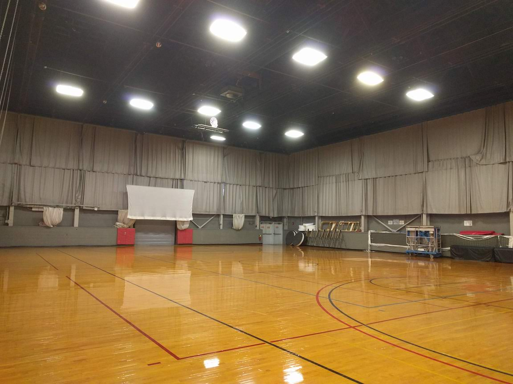
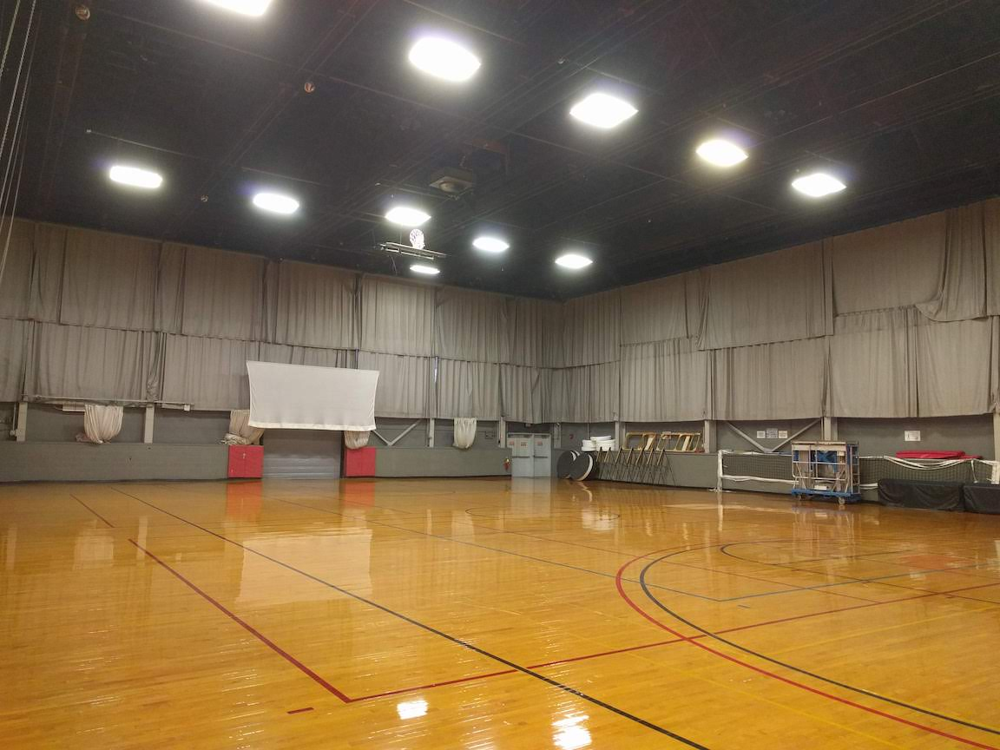

Event Information
Last updated: January 18, 2020Ping Pong Parachute
Ping Pong Parachute will be held in DuPont Gymnasium. The gym has a vaulted ceiling with a peak height of 55 ft. The launcher will be positioned under the highest point of the ceiling. For reference, the height at the midpoint of the vault is 42 ft.
{kind=link}
{kind=link}
Protein Modeling
Rules Clarification (4.b.iii.3): The National level of competition requires that teams include "schematic representations of the other regions of the fusion protein and their connections to each other." We will score the event by awarding the same credit for all models, regardless of completeness, that have at least some representation of the other regions of the fusion protein. Models should provide enough evidence to substantiate that competitors know of and have depicted the other regions of the fusion protein, their connections to each other, and that these regions are depicted in the correct linear order.
Wright Stuff
Wright Stuff will be held in Rockwell Gymnasium. The ceiling height is 40 ft, but there is a network of support girders covered by a net suspended underneath. The effective ceiling height (to the bottom of the girders) is 28 ft which is what you should expect to be flying at. The first image shows the venue for the timed flights. The second image shows the adjacent gym which will be used for trim flights.
 

{kind=link}
Trial Event: Botany
Botany RulesRules Clarification (Division C): 3.c should read, edits in bold: "Participants should also have a broad knowledge of the major divisions between groups of plants (i.e., algae vs. multicellular plants, monocot vs. dicot, embryophytes vs. cryptogams, woody vs. herbaceous plants).”
Trial Event: Lean Mean Meme Machine
Lean Mean Meme Machine RulesThe Lean Mean Meme Machine prebuild meme topic for the 2020 Invitational is "Inquiry Events". You can interpret this however you'd like, but the connection to the theme must be clear to the graders. Teams are allowed to reference both current and past inquiry events as well as the concept of inquiry events itself. Memes can be of any format (homemade or pre-existing) as long as they are pictorial. Memes must be entirely original and not plagiarized.